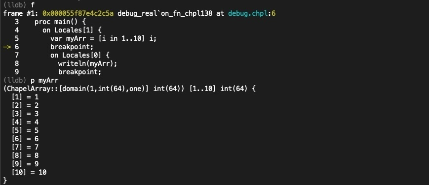
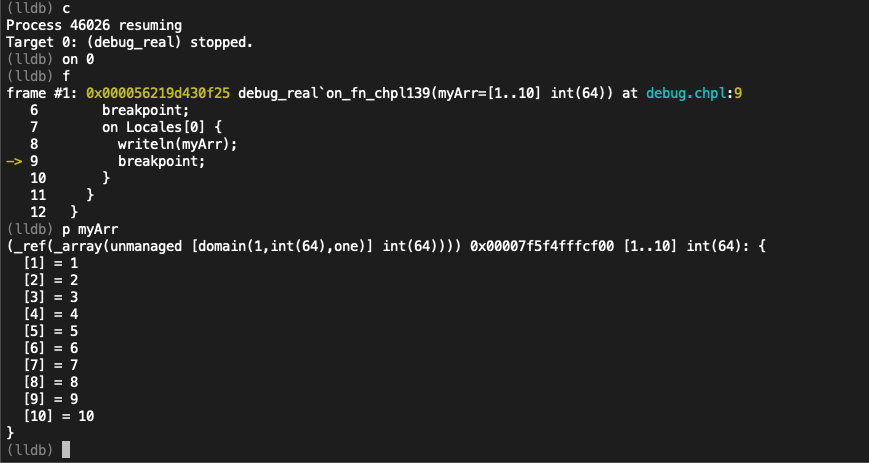
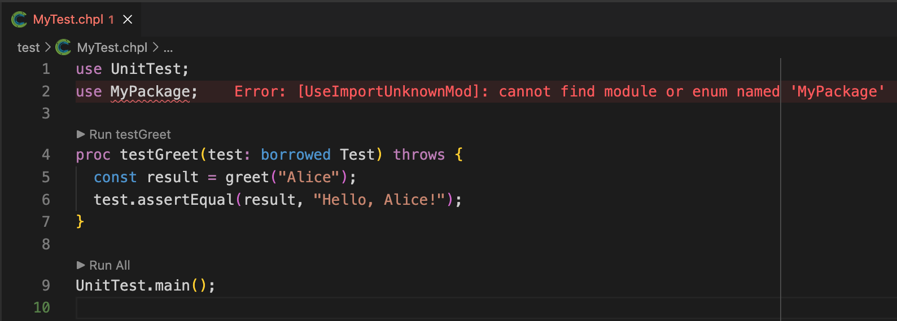
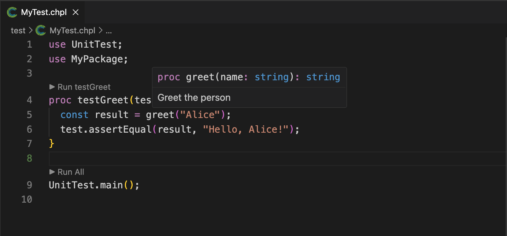
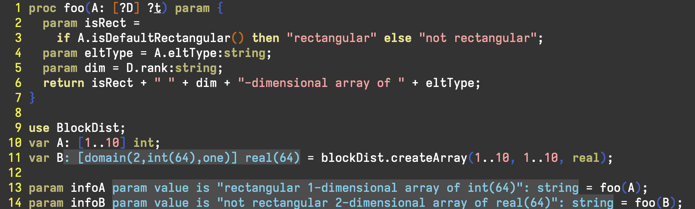
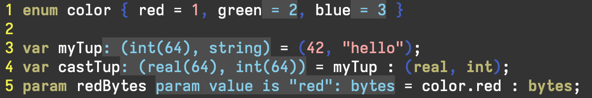

The Chapel developer community is pleased to announce the release of Chapel 2.7! Notably, this is the first version of Chapel to be made available since our project joined the High Performance Software Foundation this fall.
As always, you can download and install this new version in a [note:Please note that some formats may not yet be available at time of publication…], including Spack, Docker, Homebrew, various Linux package managers, and source tarballs.
This article introduces some of the highlights of Chapel 2.7, including:
-
A new compiler flag supporting vector libraries
-
Improvements when debugging Chapel programs
-
Stack traces on fatal errors by default
-
Enhancements to Mason, Chapel’s package manager
-
Improvements to the capabilities of the Dyno compiler front-end
In addition to the above features, Chapel 2.7 also includes improvements to the pre-built Linux packages, in terms of features and flexibility.
For more information, or a much more complete list of changes in Chapel 2.7, see the CHANGES.md file. And a big thanks to everyone who contributed to version 2.7!
Using vector libraries
One of the nice performance-oriented features added in this release improves the vectorization capabilities of the Chapel compiler through vector math libraries. Chapel already does a good job of [note:Vectorization is turning scalar code into vector code to make use of modern CPUs’ SIMD capabilities.], particularly when making use of vector math libraries such as Libmvec or SVML to accelerate math-heavy code. However, using such libraries has traditionally not been a very user-friendly experience, requiring users to specify low-level C/LLVM flags to enable this extra performance.
In this release, we added --vector-library, a new Chapel compiler
flag that makes it easy to enable vector math libraries in Chapel
programs. This flag takes one argument providing the name of the
vector library to use. For example, to use Libmvec on x86 systems,
you can compile your program like so:
$ chpl --fast --no-ieee-float --vector-library LIBMVEC-X86 myBenchmark.chpl
This makes it easier to vectorize code like the following example, which raises each element of an array to a random scalar power:
|
|
Normally, this code would either not be vectorized at all or would
require low-level tricks to get vectorized performance. Using
--vector-library, the compiler can automatically make use of
vector math libraries to enable big performance improvements.
Benchmarking the code above to see how much of an impact
--vector-library would have, we saw more than a
2 speedup to the kernel() call when using
--vector-library=LIBMVEC-X86 on a 32-core AMD EPYC 7543P
processor, as compared to compiling without a vector library.
The --vector-library flag is a new addition to Chapel’s
performance optimization toolkit, making it easier than ever to get
high-performance vectorized code. We plan to continue improving the
ergonomics of this flag in future releases by introducing
platform-independent ways of referring to the libraries without
having to embed names that are specific to the back-end compiler or
CPU (like -X86 in the example above).
Debugging
A big theme of our last few releases has been improving the ability to debug Chapel programs. For this release, we continued this focus by making further improvements to the debugging experience.
Multi-locale debugging
In the Chapel 2.6 release, we introduced a new prototype parallel debugger for multi-locale programs. This tool permits users to step through their multi-locale executions in a single terminal window, setting breakpoints and inspecting variables on any given locale.
This release adds support for Chapel’s [note:In Chapel, if a variable is visible within a given scope, it is available for use by the programmer even if it is stored on a remote locale.] to the debugger. This means that while debugging a particular locale, values stored on another locale can be inspected. Combined with the ability to pretty-print Chapel types, as introduced in the last release, debugging Chapel programs has never been easier.
As an example of this, consider the following example, which declares an array on locale 1 and then accesses it remotely from locale 0:
|
|
The following screenshots illustrate a debugging session for this
program starting from the point when we hit the initial breakpoint
on locale 1 (where we already happen to be in locale 1’s context).
We start by printing myArr, which prints its values:

We then continue execution and hit the next breakpoint. The
debugger informs us that it was a task on locale 0 that hit this
breakpoint by printing Target 0: …. We can then use on 0 to
switch the current debugger context to locale 0 and print out
myArr there as well:

Note that on locale 0, myArr has a type of ref(_array(…)),
indicating that the array we’re printing is actually a remote
reference to the array on locale 1. Notably, we can still print its
contents despite it being stored remotely.
We are continuing to improve chpl-parallel-debug for future
releases and welcome feedback on how to make it even better.
Compiler Flags for Debugging
Another big improvement to the user experience of debugging Chapel
involves changes to the compiler’s flags for debugging. The
previous best practice for debugging Chapel involved compiling with
debug symbols (-g) along with several additional flags to disable
various Chapel optimizations. Optimizations are great for
performance, but by nature they can make debugging more difficult
due to their tendency to obscure the correspondence between source
code and generated code. For example, this can lead to confusing
behavior when stepping through code or inspecting variables. Yet,
knowing which optimizations to disable required a familiarity with
the Chapel compiler, not to mention lots of flags to be thrown,
neither of which was ideal.
To improve this situation, we’ve added a new compiler flag,
--debug-safe-optimizations-only, which disables a set of
optimizations that are known to interfere with debugging. With this
flag, users can now compile for debugging with 2 flags:
chpl -g --debug-safe-optimizations-only myProgram.chpl
However, even this felt [note:We pride
ourselves on simple and clear flags, like --fast to make your code
go fast!], so we adjusted the behavior of --debug to
imply -g and
--debug-safe-optimizations-only. This means
that the preferred debugging configuration can now be achieved with
just a single flag!
chpl --debug myProgram.chpl
Improved stack traces
Another aspect of debugging is being able to diagnose and fix execution-time errors. When a halt occurs in a Chapel program, it can be difficult to figure out where the error occurred and what caused it. As an example, consider the following program, which prints out parts of an array using different slice arguments:
|
|
One of the slices results in an out-of-bounds array access when
compiled with --checks (Chapel’s default). In Chapel 2.6, you
would get an error like this by default:
outOfBounds.chpl:14: error: halt reached - array index out of bounds
note: index was 10 but array bounds are -9..9
This doesn’t provide enough information to figure out which slice is causing the halt. Prior to today’s release, there are a few ways you might figure this out:
-
Add lots of
writeln()statements to narrow down where the error is occurring. -
Run the program in a debugger, which will stop execution at the point of the halt, permitting a backtrace to be viewed.
-
Rebuild the Chapel runtime and program with stack unwinding enabled, causing a stack trace to be printed on halt.
All of these options require extra work on the part of the user, either by changing their program or changing their Chapel installation.
To improve this, in Chapel 2.7, the default build configuration and release formats now have stack unwinding support enabled by default. As a result, when compiling the program above [note:Note that compiling without debugging will also result in a stack trace, simply one with potentially less precise line number information.] and running it:
$ chpl --debug outOfBounds.chpl
$ ./outOfBounds
the following stack trace is now printed upon hitting the error:
outOfBounds.chpl:14: error: halt reached - array index out of bounds
note: index was 10 but array bounds are -9..9
Stacktrace
halt() at $CHPL_HOME/modules/standard/Errors.chpl:762
checkAccess() at $CHPL_HOME/modules/internal/ChapelArray.chpl:873
this() at $CHPL_HOME/modules/internal/ChapelArray.chpl:1002
this() at $CHPL_HOME/modules/internal/ChapelArray.chpl:1036
printSlice() at outOfBounds.chpl:14
main() at outOfBounds.chpl:4
Disable full stacktrace by setting 'CHPL_RT_UNWIND=0'
This stack trace shows the call chain that led to the halt, making
it much easier to identify the source of the error. Specifically, it
points to the slice on line four, 0.. by 2 # 6, as the culprit for
the bug. By eliminating the need for extra steps to get a stack
trace, we hope that diagnosing runtime errors in Chapel programs
becomes easier than ever!
Mason Improvements
Chapel 2.7 includes a slew of improvements to Mason, Chapel’s package manager. The first highlight is better integration with Chapel’s ever-growing tooling support. In Chapel 2.6, VSCode users had to take additional steps to configure the language server so that it could recognize a Mason package’s structure. Without that additional step, users would get errors about the Chapel compiler not being able to find a module included in the Mason package, like the following::

With Chapel 2.7, the additional step for Mason packages is no longer necessary. Compare the screenshot using Chapel 2.7 below with the one above to see the difference!

Another new Mason feature is support for prerequisites. This feature supports code in other languages that needs to be compiled or bootstrapped in some way before compiling the Chapel code for the Mason application or library. A common use case for prerequisites is to bundle some C code that a Chapel-based library would call into via interoperability. With the Chapel 2.7 version of Mason, package implementers can add code in other languages to be compiled alongside the Chapel code.
The initial implementation for prerequisites involves extending Mason’s standard directory structure to specify prerequisites, how to build them, and how to incorporate them into the Chapel compiler’s command-line. For example, a Mason package with a C-based prerequisite might use a directory structure like this:
MyMasonPackage/
├── src/
│ └── MyMasonPackage.chpl
├── prereqs/
│ └── SomePrereq/
│ └── code.c
│ └── header.h
│ └── Makefile
└── Mason.toml
To learn more about this new feature, check out the new section of Mason’s documentation, Building Code in Other Languages. Meanwhile, we’re working on further generalizations to supporting prerequisites. Issue #28174 captures some of our ideas, and we are interested in receiving your comments about the feature there as well.
Finally, two additional package management highlights in Chapel 2.7 are that Mason performance has improved significantly, and we have started to modernize Mason’s integration with Spack, a popular package manager designed for HPC.
Improvements to the Dyno Compiler Front-End
As you may have seen in previous release
announcements, Dyno is
the name of our project that is modernizing and improving the Chapel compiler.
Dyno improves error messages, allows incremental type resolution,
and enables the development of language tooling. Among the major wins for this ongoing effort is
the Chapel Language Server
(CLS),
which was previously featured in a blog post about editor
integration, not to mention Chapel’s
linter, VSCode support, and chpldoc.
Our team has been hard at work implementing many features of Chapel’s type system in Dyno, which, among other things, will enable tools like CLS to provide more accurate and helpful information to users. In the 2.7 release, we have continued to improve Dyno’s support for Chapel’s language features, and we’ve also expanded the compiler’s ability to leverage the Dyno front-end to generate executable code.
More Language Features
Dyno’s resolver for types and calls has seen the usual steady stream of improvements. In this release, some notable changes include:
-
improvements for array formals and array formal type queries
-
support for more compiler-generated casts
-
improvements to [note:Split initialization is a feature that permits a variable’s initialization to take place in a distinct statement that follows the variable’s declaration.] of variables
The following screenshots show an editing session in which Dyno-inferred information is rendered in-line using blue text when editing the corresponding code examples. The first example focuses on array formals:
array-formals.chpl
|
|

In the example above, we use the same generic function foo() to
accept both a regular (“default rectangular”) array and a
block-distributed array. Both of these arrays are accepted as
usual, and queries in the formal type extract the domain and element
type information. The infoA and infoB variables therefore
contain accurate descriptions of the arrays passed to foo().
The next example demonstrates new support for compiler-generated casts.
casts.chpl
|
|

A cast from an integer-string tuple is performed to create a real-integer
tuple, casting the integer to a real and the string to an integer. Also, a
cast from an enum constant of type color is converted to a param value of
type bytes. Finally, notice that the language server is also showing the
inferred numeric values corresponding to the enum constants (2 for green
and 3 for blue).
Generating Executable Code
This release also saw improvements to our support for using
Dyno to generate executable code, which is a major step toward
Dyno’s goal of replacing the front-end of the production
compiler. This is an ongoing process that involves taking the
information that Dyno has computed about the program and generating
AST for the production compiler, essentially skipping over its
historical type resolution and analysis phases. This capability is
enabled using the --dyno command-line flag.
Initial support is limited to a subset of Chapel’s language
features, but is growing all the time. Here is an example program
and helper module that Dyno can now compile, demonstrating uses of
language features like param for-loops and grouped variable initialization.
This program also demonstrates Dyno’s ability to compile standard module
code, like that found in Chapel’s IO module. This represents a
significant step forward in Dyno’s ability to compile real-world Chapel code:
|
|
Print.chpl
|
|
The program above can be [note:The --no-checks flag is used here to disable runtime checks that
utilize language features not yet supported by Dyno’s code generation.]
with --dyno --no-checks to produce an executable that prints the
following output:
|
|
Looking ahead, we plan to continue expanding the set of supported
language features and standard modules that Dyno can compile. In the
near term we will be directing our focus to fully resolving
writeln() itself, and tackling additional core language features
like iterators and error handling.
Stay tuned as we continue to add support for more features to Dyno!
For More Information
If you have questions about Chapel 2.7 or any of its new features, please reach out on Chapel’s Discord channel, Discourse group, or one of our other community forums. We’re also always interested in hearing about how we can make the Chapel language, libraries, implementation, and tools more useful to you.